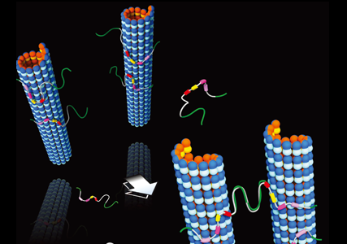

Report by Subjects
Report by Subjects
KAIST RESEARCH ACHIEVEMENTS
Role of Tau Regulating Force between Microtubules
Department of Bio and Brain Engineering
Myung Chul Choi
Summary
Metaphor - In the morning of 2050, a motor protein named of "Kinesin" starts engine to transport neurotransmitter from the body of cell down to the end of axon. He is listening to morning news saying that highways is collapsed as symptom of Alzheimer's. But he is not in worry because he knows 119 would fix it by signaling Tau to be expressed more with the recipe of short: medium: long Tau = 4:5:1. In an hour, Kinesin is driving through highway 101.
R&D Report
Microtubules (MTs) are hollow cytoskeletal filaments assembled from 慣棺-tubulin heterodimers. Tau, an unstructured protein found in neuronal axons, binds to MTs and regulates their dynamics. Aberrant Tau behavior is associated with neurodegenerative dementias, including Alzheimer's disease. We report on a direct force measurement between MTs coated with Tau by synchrotron small angle X-ray scattering (SAXS) under osmotic pressure. Tau with longer N-terminal tails sterically stabilizes MTs, preventing bundling up to 10,000-20,000 Pa, an order of magnitude larger than bare MTs. This study suggests an isoform-dependent biological role for regulation by Tau, with longer isoforms conferring MT steric stabilization against aggregation either with other biomacromolecules or into tight bundles, preventing loss of function in the crowded axon environment.
MTs, structural components of the eukaryotic cytoskeleton, are protein nanotubes involved in a range of cell functions, including intracellular trafficking, cell motility, segregating chromosomes, and establishing cell shape. MTs are composed of straight protofilaments (PFs), which are head to tail assemblies of globular tubulin heterodimers that selforganize, with lateral PF-PF interactions stabilizing the hollow MT. MT structure and assembly dynamics are regulated and functionally differentiated in vivo by MT-associated protein (MAP) Tau that is primarily localized to the axons of mature vertebrate neurons. Although Tau is involved in numerous functions, which remain to be fully elucidated, a well-characterized function of Tau on binding to MTs in mature neurons is in the modulation of MT dynamic instability by enhancing tubulin assembly while suppressing MT depolymerization. This modulation of MT dynamic instability ensures proper trafficking of modifications of Tau, including hyper-phosphorylation and mutations leading to loss of function, have been implicated in Alzheimer's disease and a wide range of neurodegenerative disorders, including Fronto-Temporal Dementia with Parkinsonism linked to chromosome 17, Pick's, supranuclear palsy, and more recently, chronic traumatic encephalopathy in athletes suffering concussions.
We have investigated Tau-mediated forces between MTs using SAXS subjected to osmotic pressure. This study has revealed that Tau fundamentally alters the repulsive forces between MTs in an isoform-dependent manner. In particular, the jump in osmotic pressure required to bundle MTs coated with -M and -L Tau isoforms reveals a gain of function of Tau isoforms with longer N-terminal tails in imparting steric stabilization to individual MTs against bundling.

Fig 1. Tau a hallmark protein of Alzheimer's regulates
intermolecular force between microtubules
What is highly significant in this work is the demonstration of the functional property of the charged projection domain (PD) in sterically stabilizing MTs on undergoing a transition to a brush state. Previous identification of Tau's PD was based entirely on its lack of binding affinity to MTs and did not give insight to its biophysical functions. Steric stabilization against cellular biomacromolecules is essential in preventing MT loss of function in the crowded axon environment. Furthermore, the conformation of Tau on the MT surface is intrinsically connected to its coverage. The discovery of two distinct conformation states of MT-bound Tau, namely mushroom or brush, further emphasizes the need for future biophysical measurements of MT-bound Tau to be conducted in both regimes. It is interesting to note that the expression of six different Tau isoforms is developmentally regulated, where fetal brain expresses only the shortest isoform (3RS), whereas the adult brain expresses an 1:1 ratio of 3R and 4R Tau. This observation would suggest that the 3RS isoform is likely to be expressed at a higher level in fetal brain, enabling steric stabilization of fetal MTs at higher coverage, where 3RS Tau would be in a more extended brush conformation. With respect to the adult brain, although the composition of different isoforms is not known at different points along the length of the axon, our finding points to a minimum coverage needed by the longer isoforms (either -M or -L) to impart steric stabilization to MTs.
This minimum coverage required for MT steric stabilization by Tau could also shed light on a possible pathway for neurodegeneration. In the diseased state, Tau is often found to be hyperphosphorylated, with a weaker binding affinity to MTs. MTs lose sufficient Tau coverage to the degree where PDs transition from brush to mushroom and fail to sterically stabilize MTs, intracellular trafficking on MTs could be significantly hampered by the nonphysiological close-bundled state in the crowded axonal environment. At high pressures in the MT bundled-phase regime, the polyampholytic nature of Tau resulted in a coverage-dependent electrostatic attraction between MTs. This regime of "tight bundles," resisted by longer PDs, may conceivably be accessed in vivo in the presence of excess molecular crowding forces. Tight bundles would have negative consequences for organelle trafficking by MTs, where the small MT wall to wall spacing, ranging between 3 and 5 nm, would be expected to interfere with motors carrying cargo. In addition to the biological interest in MT-associated protein Tau as a key component of the axonal cytoskeleton, the directed assembly of MTs by intrinsically disorder protein Tau is also of broad interest from a biomolecular materials and biophysics perspective. The unique manifestation of short-range attraction and long-range repulsion by Tau of MTs gives inspiration for the design of biomaterials with multiple interaction motifs.
The microtubule-associated protein Tau is known to stabilize microtubules against depolymerization in neuronal axons, ensuring proper trafficking of organelles along microtubules in long axons. Abnormal interactions between Tau and microtubules are implicated in Alzheimer's disease and other neurodegenerative disorders. We directly measured forces between microtubules coated with Tau isoforms by synchrotron smallangle X-ray scattering of reconstituted Tau-microtubule mixtures under osmotic pressure (mimicking molecular crowding in cells). We found that select Tau isoforms fundamentally alter forces between microtubules by undergoing a conformational change on microtubule surfaces at a coverage indicative of an unusually extended Tau state. This gain of function by longer isoforms in imparting steric stabilization to microtubules is essential in preventing microtubule aggregation and loss of function in organelle trafficking.
Research Funding
ㆍThis work was supported by NRF of Korea Grants 2014-R1A1A2A16055715.
Research Outcomes
ㆍDirect force measurements reveal protein Tau confers short-range attractions and isoform-dependent steric stabilization to microtubules, PNAS, 112, E6416(2015)